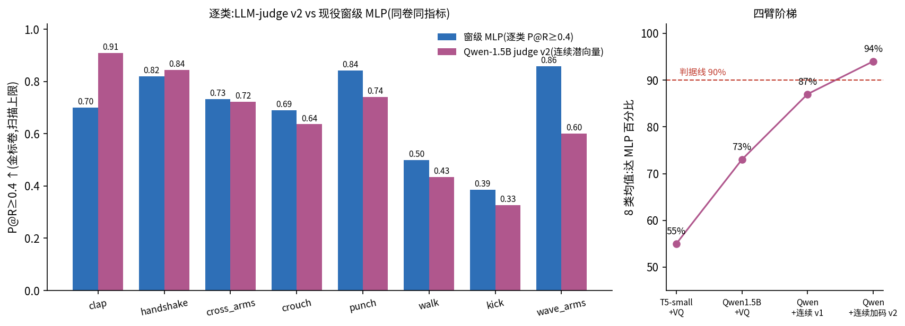

Generated from Markdown source: report/G1_MotionGPT/2026-08-25-llm-judge-line-vq-to-latent.md
G1 动作段判定器 — 语言模型判定器四个版本的对比与 40 段盲评
背景一句话:我们在清洗一个机器人动作数据集,已有一个部署中的小型判定器(窗级 MLP)逐段判 "干净/脏";本报告测试另一条路线——把预训练语言模型改造成判定器,让它不仅判净脏,还能用 文字说出理由(哪一秒有什么问题)。
Conclusion
- 第四个版本达到了预先定下的及格线:8 个动作类里有 4 个类,语言模型判定器的纯度达到 现役小判定器的 90% 以上(及格线是"至少 3 个类");其中拍手类 0.909、握手类 0.844, 首次反超现役判定器(它们分别是 0.700 和 0.819)。
- 四个版本逐一换掉一个部件,找到了真正的瓶颈:瓶颈不在语言模型大小,而在"动作以什么 形式喂给语言模型"。把动作压缩成 512 个离散编号(向量量化)喂进去,平均只能达到现役 判定器的 73%;改成直接喂连续向量(和现役判定器吃的完全同一种),一步涨到 87%;再把 判定任务的训练占比和步数加倍,到 94%。
- 强化学习阶段没有产生任何提升,原因查清了:监督训练已经把全部 1128 条训练答案 (判定和脏区间)背得一字不差,强化学习给它出的题它全部答对,没有错误可学,梯度为零。 这不是算法选错,是训练数据全部用尽后的必然;补救实验(把数据切成两半,一半只用来监督 训练、另一半留给强化学习)首次执行时配置有误(勘误 2026-08-25:强化学习的起点 被误配为全量监督模型,而非半量监督模型——见 Results 小节的勘误框),等价于"全量监督 之上再强化",结果与全量监督几乎相同,与饱和机制自洽;真正的半量补救实验已用正确 起点重跑,结果另行补报。
- 40 段全新数据盲评(标注者逐段人工判定):现役判定器"最有信心是干净"的段里,真干净 的占 87.5%——其中 6 个类 5 条全对,但踢腿类 5 条里 4 条实际是脏的;语言模型判定器在 同一批段上,判"干净"的段里真干净的占 92.6%,并抓住了那 4 条漏网脏踢里的 3 条。 两个判定器犯的错几乎不重叠,这是把它们组合使用的价值所在。
Problem and terminology
研究问题:预训练语言模型接上我们的动作编码和 1128 条人工标注,判别力能否追上并超过现役的 小型判定器,同时给出人能读懂的判定理由;如果追不上,瓶颈在语言部分还是在动作感知部分。
| Term | 本报告 operational definition | Scope / not to confuse with |
|---|---|---|
| 现役判定器(窗级 MLP) | 部署中的小模型:动作每 0.2 秒编码成一个 512 维向量,每个向量过一个两层小网络得到"这 0.2 秒脏的概率",整段取最大值当段分 | 参数量约 3 万,无语言能力,只出分数不说理由 |
| 语言模型判定器 | Qwen2.5-1.5B(通用预训练语言模型)+ 我们的动作输入,微调后输出一句理由 + 最后给"判净"或"判脏" | 四个版本见 Method;非公开的 MotionGPT 模型 |
| 离散编号输入(VQ) | 动作向量先四舍五入到 512 个固定"码字"中最近的一个,把编号当生词喂给语言模型 | 四舍五入会丢细节——本报告证实这是主要信息瓶颈 |
| 连续向量输入 | 不做四舍五入,动作向量经一个可训练的线性变换直接接入语言模型内部 | 与现役判定器共用同一个动作编码器,信息零损失 |
| 金标卷 | 每类 50–100 段冻结的人工标注考卷,只用来考试、从不参与训练,共 459 段 | 数字是"考卷上挑最优阈值"的乐观口径,全文一致,只作模型间相对比较 |
| 纯度 P | 被判"干净"的段里真干净的比例(越高越好) | 与之相对:R = 真干净的段里被留下来的比例 |
| P@R≥0.4 | 在至少保住 40% 真干净段的前提下,纯度最高能做到多少——本报告的主对比指标 | 单看纯度可以靠"几乎全拒"作弊,加了保底留存后才可比 |
| 40 段盲评 | 从从未标注过的数据里,取现役判定器每类最有信心"干净"的 5 段,标注者在不知道模型判什么的情况下逐段人工判定 | 样本只覆盖"判净"一侧,所以只能测两个判定器"判净时的可信度" |
Method
先后训练了四个版本,每次只换一个部件,其余不动:
| 版本 | 语言模型 | 动作输入 | 训练量 | 目的 |
|---|---|---|---|---|
| 1 | T5-small(约 6 千万参数) | 离散编号 | 4 千步 | 起点 |
| 2 | Qwen2.5-1.5B(25 倍大) | 离散编号 | 6 千步 | 检验"语言模型不够大"假设 |
| 3 | Qwen2.5-1.5B | 连续向量 | 6 千步 | 检验"离散化丢信息"假设 |
| 4 | Qwen2.5-1.5B | 连续向量 | 1.5 万步,判定任务占比加大 | 检验"训练量不足"假设 |
训练数据:1128 条人工标注(逐 5 条人工复核后构建;8 张金标卷的段全部排除在外)。每条= 动作 + 指令"判断这段 X 动作干不干净,先说理由再给结论",理由直接采用标注者当时写的评论。 考试方法:8 张金标卷,和现役判定器同卷同指标。
| Criterion(预先定下) | Threshold | Measured | Verdict |
|---|---|---|---|
| 语言模型判定器及格 | ≥3 个类达到现役判定器纯度的 90% | 版本 4:4 个类(拍手 130%、握手 103%、抱臂 98.5%、下蹲 92%) | PASS |
| 换连续向量的提升 | 8 类平均 ≥10 个百分点 | +8.9 个百分点 | 差 1.1 点,方向明确 |
| 强化学习有效 | 奖励在训练数据上未饱和 | 全量数据上奖励恒为满分,零梯度;对半切分后恢复有效梯度 | 全量记 N/A;补救实验见 Results |
实验确认记录(Run Spec 状态)
每一级实验都有 user 会话内确认后开跑:版本 3(连续向量)spec 确认语"a try";版本 4 与
强化学习"1 2 都做";强化学习换 GSPO 算法并加脏区间奖励"可以,做吧…GSPO";数据对半切分
补救实验"1"。spec 原文与逐级结果存于
logs/g1_motiongpt/zhead_multi_punch_real60/evidence_v2cleanexam.json 的
qwen_judge_* 各字段。训练数据集按 user 指令"每 5 条去审查和构建"执行(226 批逐批人工
复核;复核中发现并修复了 3 类构建缺陷)。
Results

三个场景下两个判定器的对比(判定口径:现役判定器用默认阈值 0.5,语言模型直接看它输出的 判净/判脏结论——两者都是"不做任何调参"的开箱状态):
| 场景 | 判定器 | 判对率 | 纯度 P | 净留存 R | 脏剔除 NR |
|---|---|---|---|---|---|
| 训练数据(1168 段) | 现役 | 0.693 | 0.851 | 0.317 | 0.960 |
| 语言模型 | ≈1.00 | ≈1.00 | ≈1.00 | ≈1.00(全部背熟——见下) | |
| 金标卷(459 段) | 现役 | 0.632 | 0.600 | 0.168 | 0.929 |
| 语言模型 | 0.693 | 0.602 | 0.626 | 0.736 | |
| 40 段盲评(全新) | 现役 | — | 0.875 | 测不了* | 测不了* |
| 语言模型 | 0.700 | 0.926 | 0.714 | 0.600 |
* 盲评的 40 段全是现役判定器"判净"的段,它的拒绝侧没有样本,故只能测判净侧。
对半切分补救实验(2026-08-25 补报;含勘误)
勘误(2026-08-25 深夜):本小节首版把下表第二行称为"半量+强化",事后核对训练产物的 evidence 记录发现,该次强化学习的起点被误配为全量监督模型 v2(而非半量监督模型)—— 即它的 1128 条标注全部逐字见过,强化学习只是在其上重跑了 565 条它已背熟的数据。因此 "半量+强化追平全量"的原结论不成立;下表按真实身份重新标注。真正的半量补救实验 (起点=半量监督+时间戳格式)已重跑,结果补报于后续报告。
| 模型 | 见到的标注 | 判定纯度 P@R≥0.4(8 类平均) | 脏区间时间定位(重叠度,112 段三方配对) |
|---|---|---|---|
| 半量监督 | 563 条逐字 | 0.613 | 0.484 |
| 全量+强化(原误标"半量+强化") | 1128 条逐字 + 565 条再给分数 | 0.646 | 0.607 |
| 全量监督(版本 4) | 1128 条逐字 | 0.652 | 0.595 |
- 正确读法:在背熟的数据上做强化学习,判定和定位都几乎不动(0.646 对 0.652、 0.607 对 0.595)——这与"饱和后无错可学"的机制一致,是全量强化学习无效结论的又一佐证; 它不能回答"分数监督能否顶替文字标注"(该问题需真半量起点,重跑中)。
- 时间定位的病根被两条路各自修好了一半以上(0.484 → 约 0.6)。背景是 40 段盲评后 标注者的观察——模型"病因说得对、时间点是错的"(典型例:人工标注 2.6–3.2 秒抖脚, 模型写 0–0.37 秒抖脚,病因词一字不差、位置差 2.5 秒);错时间戳几乎全是"0 到零点几 秒"的段头句式,即训练评论里最常见的区间模式被当默认答案背了出来。多见一倍区间文本 (全量监督)和直接奖励区间重叠(强化学习)都能纠这个偏,幅度相当;两条路没有叠加 测试过(在全量监督之上已无剩余数据可做强化学习——这正是最初饱和的原因)。
三个值得单独说的观察:
- 语言模型在训练数据上全对不是本事,是背诵——正因为背得太熟,强化学习阶段(先试 GRPO 算法,再试 GSPO 算法加"脏区间报得准不准"的奖励)完全没有可学的错误:同一段采样 8 个回答,8 个全对且几乎逐字相同,奖励无差别,更新量为零。
- 金标卷上,两个判定器纯度打平(0.60 对 0.60),但语言模型多留住近 4 倍的干净段 (0.626 对 0.168)——现役判定器天生保守(宁可错杀),语言模型天生均衡。
- 盲评里现役判定器的判净可信度分布极端:6 个类 5/5 全对、拍手 4/5,踢腿只有 1/5—— 踢腿是它的已知短板(该类的"高动态是否算脏"标准仍待裁定);语言模型恰好在踢腿上抓回 3 条漏网的脏段,在其他类则多报了 10 次假警报。
Analysis
- 测量结论:四个版本的对照说明,决定语言模型判定器成败的是动作以什么形式进入模型—— 离散化(四舍五入到 512 个码字)丢掉的细节,正是判净脏所需要的;换成无损的连续向量后, 一个 25 倍大的语言模型才真正发挥出来。
- 测量结论:语言模型给出的文字理由在训练数据覆盖的模式上是准确的(能报对脏区间的起止 秒数和病因),但对全新数据偶尔会照搬训练里见过的句子——理由文字可作参考,不可单独 当证据,以视频复核为准。
- user 判断(2026-08-25,方向性决策,非已证结论):语言模型路线的上限更高。支撑: 开箱即均衡(净留存高 4 倍)、与现役判定器的错误不重叠(踢腿否决价值已在盲评实证)、 可加码的空间还没用完(更大的模型、新增标注做强化学习燃料、两个判定器组合使用)。 反面:现役判定器逐类调阈值后仍在 4 个类领先,且语言模型的输出概率两极化,没有"调松 调紧"的旋钮。
- next(user 已定向):盲评产生的 40 条新标注与协作者复审中的 52 条,将作为语言模型没有 背过的新题,供下一轮强化学习使用;另有更大规模动作数据的基座继续预训练在集群上筹备中, 完成后重跑本报告的全套考卷。
Appendix
头条数字的代入式与证据路径
- 拍手类反超:语言模型 0.909 ÷ 现役 0.700 = 130%;达标类数 4 ≥ 判据 3 → PASS
- 盲评判净可信度:现役 = 35 真净 ÷ 40 判净 = 0.875;语言模型 = 25 ÷ 27 = 0.926
- 四版本平均(相对现役判定器):55% → 73% → 87% → 94%
- 证据档:
logs/g1_motiongpt/zhead_multi_punch_real60/evidence_v2cleanexam.json(g1motiongpt_judge_sft_probe= 版本1,qwen_judge_sft_probe= 版本2,qwen_judge_latent_line= 版本3/4与强化学习饱和记录,qwen_judge_blind40_span_probe= 时间点错/病因对的量化探针,qwen_judge_half_gspo_result= 对半切分补救实验) - 补救实验模型:
logs/g1_motiongpt/qwen_judge_half_gspo/;时间定位重叠度=区间交并比, 配对口径:金标判脏、三个模型都判脏、且金标与三个模型都有数字区间的 112 段 (整段脏的行不参与) - 模型:
logs/g1_motiongpt/qwen_judge_latent_v{1,2}/;训练数据集data/processed/g1mgpt_judge_sft_v1/;盲评名单outputs/g1_motiongpt/mlp_pass40_blind_{ids.txt,meta.json},人工判定已入标注库
已知限制
- 金标卷数字全部是"考卷上挑最优阈值"的乐观口径,只作模型之间的相对比较,不是对外可 引用的交付成绩(交付需预固定参数后在未见过的数据上盲测)。
- 盲评只有 40 段且按现役判定器的判净侧取样;语言模型的脏剔除率只由 5 个脏例估出,误差 可达 ±0.2。
- 拍手/握手两类的反超还没有做"换考卷重考"的稳健性检验(此前经验:单卷领先可能是考卷 抽样的运气)。
- 语言模型输出的判净概率两极化(几乎只有 0 和 1),意味着无法像现役判定器那样通过调 阈值在"纯度优先"和"留存优先"之间切换。